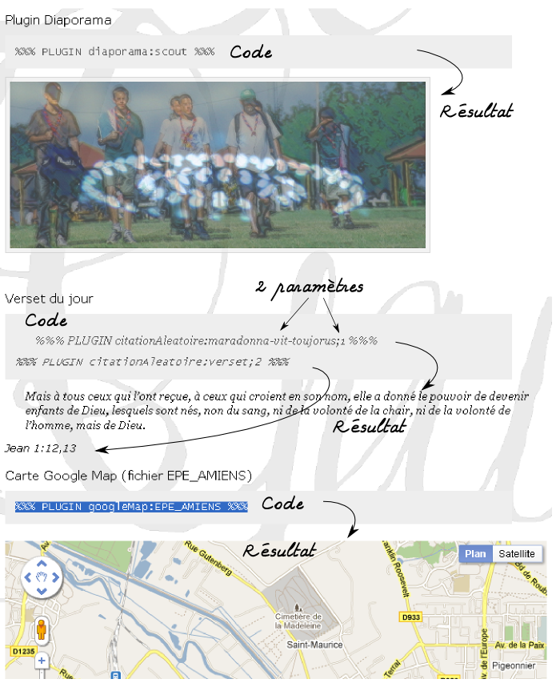

Comme nous l'avons vu, les modules existant le design du site (sa structure) est statique. Le contenu
du site est sauvegardé dans des fichiers .xml. Ce contenu est aussi statique : il
ne change pas au cours du temps, à moins que l'utilisateur modifie le contenu.
Pour ajouter un peu de dynamisme au site, des plugins peuvent être intégrés au contenu. Exemples de plugins : une carte google map, une citation qui change chaque jour, des images défilent, un encart qui peut apparaître sur plusieurs pages.
Pour ajouter un plugin a un contenu il suffit d'ajouter le code suivant au contenu :
%%% PLUGIN nom_du_plugin:parametre %%%
Et si il y a plusieurs paramètres :
%%% PLUGIN nom_du_plugin:parametre-1;parametre-2;parametre-3 %%%
Le serveur remplacera ce code par une carte google map, une citation (etc.) et si il le faut il ajoutera des liens vers des fichiers javaScript nécessaire au fonctionnent du plugin (comme pour google map par exemple).
Ci-dessous, quelques exemples concrets : le code suivit du résultat. A noter que pour le plugin "citation aléatoire", il y a deux paramètres : le premier correspond à la source des citations (Bible, Baden Powel, Victor Hugo), le second à soit la citation (paramètre-2 = 1) soit la référence (paramètre-2 = 2).
